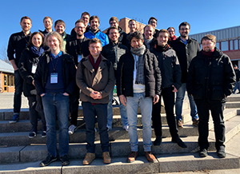

ZEUS Workshop 2019
February 14-15, 2019, Bayreuth, Germany
Program
Thursday, February 14, 2019
- 08:30 Registration
- 09:00 Welcome
- 09:15 Session 1 - Business Processes - Design and Process Mining
Fernanda Gonzalez-Lopez, Guillermo Bustos.
Evaluating Methodologies for Business Process Architecture Design - A Pilot Study
Kiarash Diba.
Towards a Comprehensive Methodology for Process Mining
Frank Duchmann, Agnes Koschmider.
Validation of Smart Contracts Using Process Mining
- 10:45 Coffee Break
- 11:00 Session 2 - Business Processes - Runtime
Sven Ihde, Luise Pufahl, Asvin Goel, Mathias Weske.
Towards Dynamic Resource Management in Business Processes
Stephan Haarmann.
Estimating the Duration of Blockchain-Based Business Processes Using Simulation
Jasmin Türker, Thomas S. Heinze.
PANIC – Plugging Data Leak Detection into the Camunda Modeler
- 12:30 Lunch Break
- 13:30 Session 3 - Serverless Computing and FaaS
Robin Lichtenthäler.
Model-driven software migration towards finegrained cloud architectures
Stefan Winzinger.
Towards coverage criteria for serverless applications
Johannes Manner.
Towards Performance and Cost Simulation in Function as a Service
- 15:00 Coffee Break
- 15:15 Keynote 1
Stefan Schönig.
IoT-based Process Management
- 17:30 Event: Bayreuther Katakomben
- 19:00 ZEUS 2019 Dinner
Friday, February 15, 2019
- 09:30 Keynote 2
Simon Harrer and Tammo van Lessen.
One Kubernetes to rule them all
- 10:30 Coffee Break
- 10:45 Session 4 - Software Design
Martin K. Simon, Linus W. Dietz, Tobias Diez, and Oliver Kopp.
Analyzing the Importance of JabRef Features from the User Perspective
Oliver Kopp and Anita Armbruster.
Generalized Markdown Architectural Decision Records: Capturing the Essence of Decisions
- 11:45 Lunch
- 12:45 Session 5 - IoT and Cloud Manufacturing
Diana Peters and Thomas S. Heinze.
Security Challenges of Cloud Manufacturing: A Case Study in the Aerospace Domain
Javad Ghofrani and Dirk Reichelt.
Using Digital Smart Assistants as HMI for Robots in Smart Production Systems
- 14:00 Keynote 3
Michael Bauer.
Software architecture of an e-Commerce system on the foundation of MS Azure
- 15:00 Closing Session, Best Presentation Award, ZEUS 2020 Announcement

Workshop
Local Organizers
Proceedings